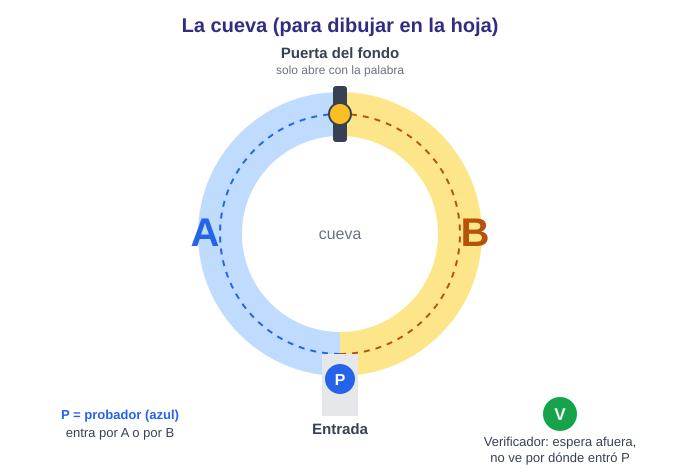
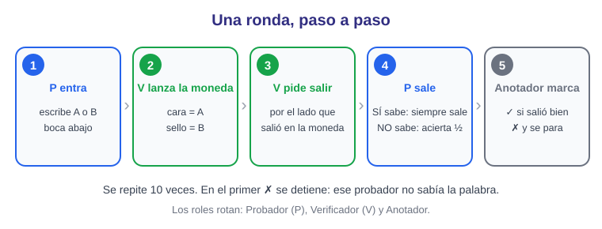
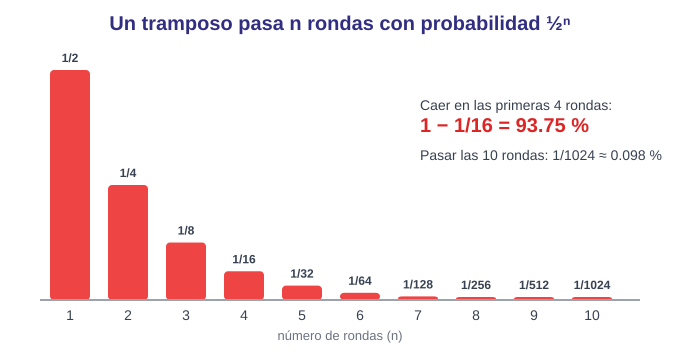
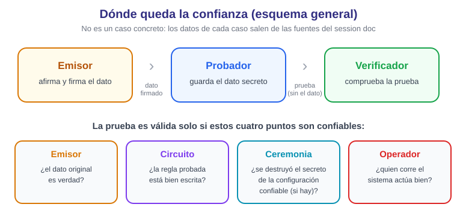
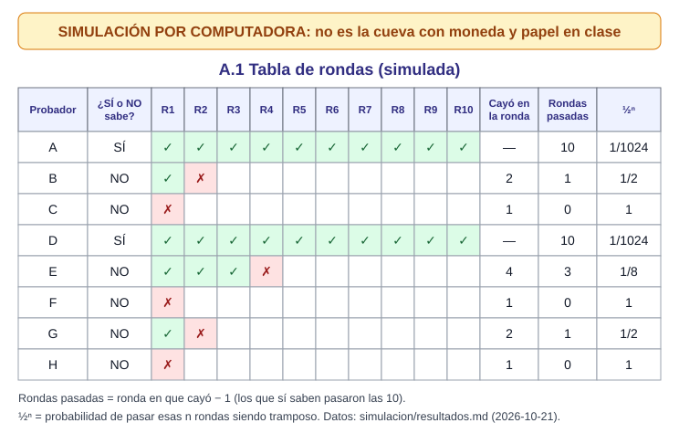
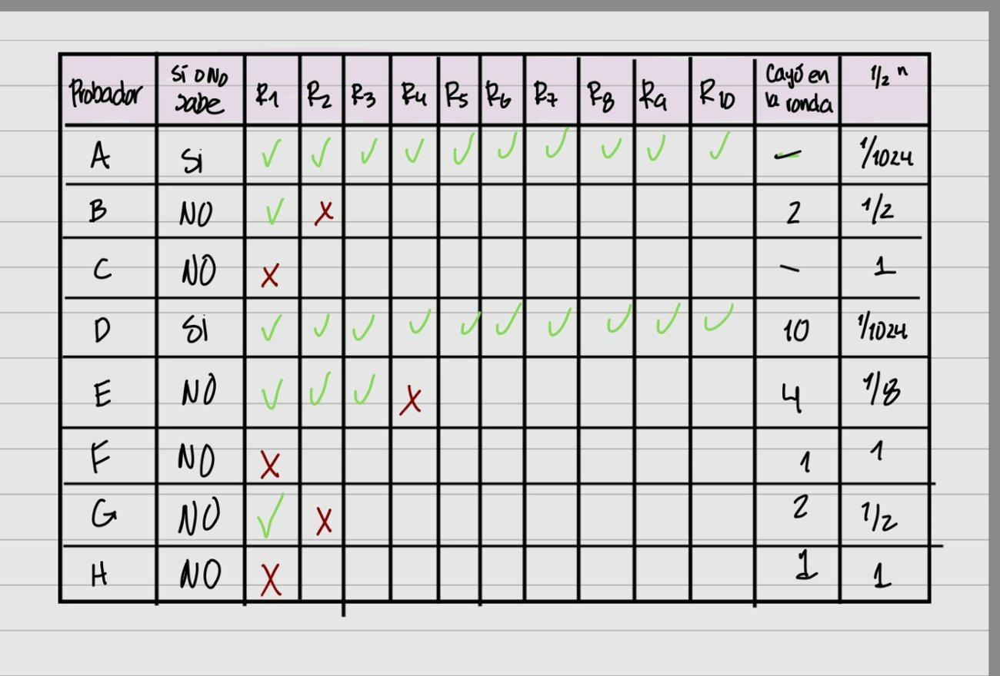
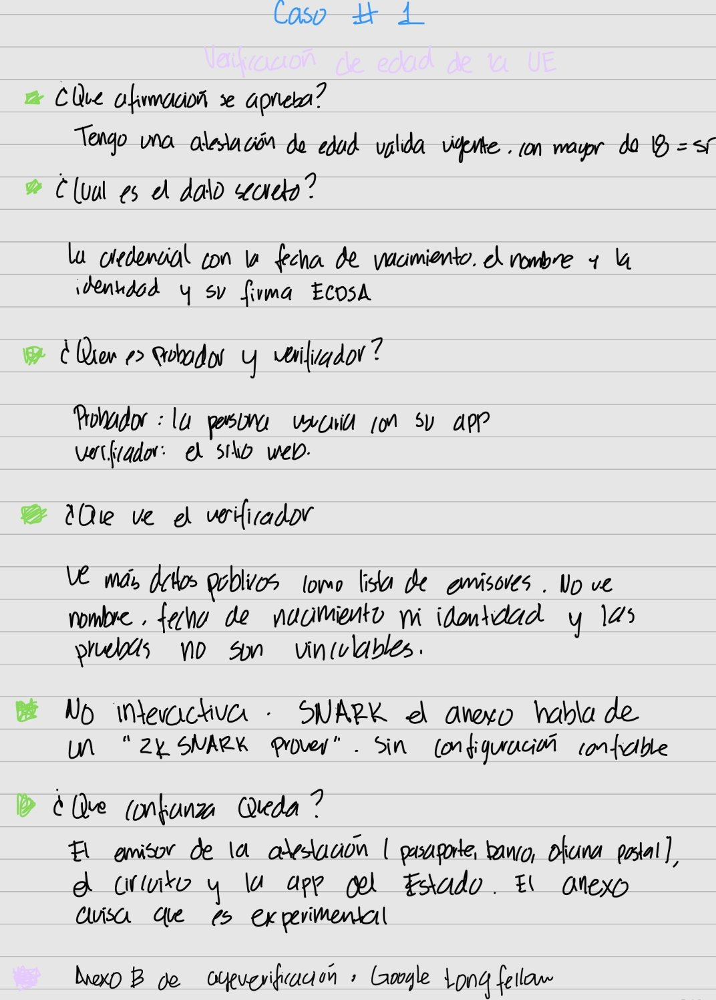
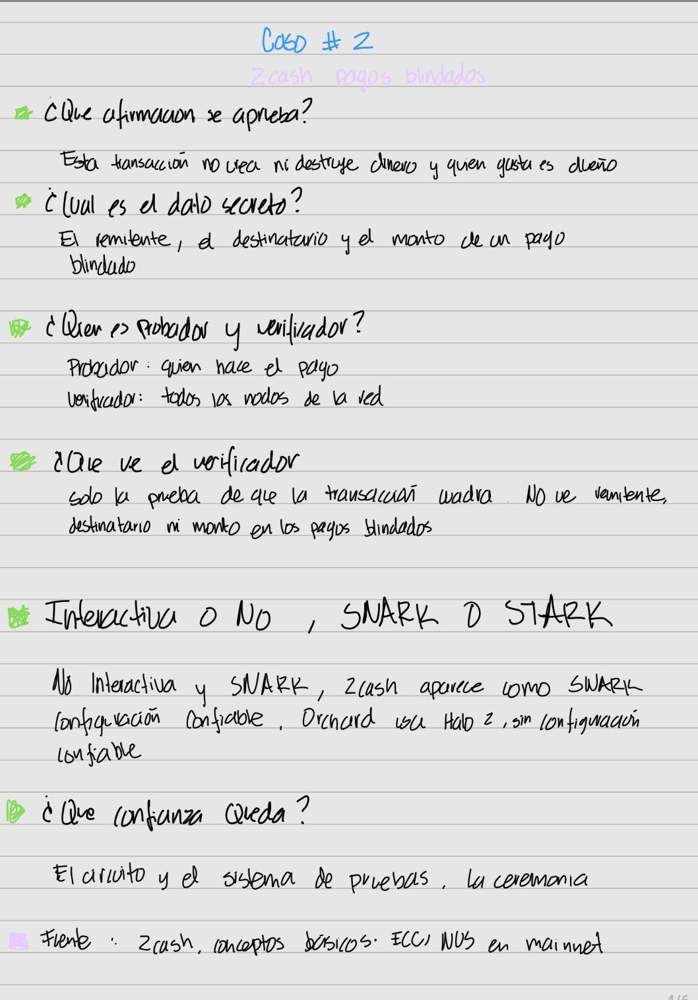
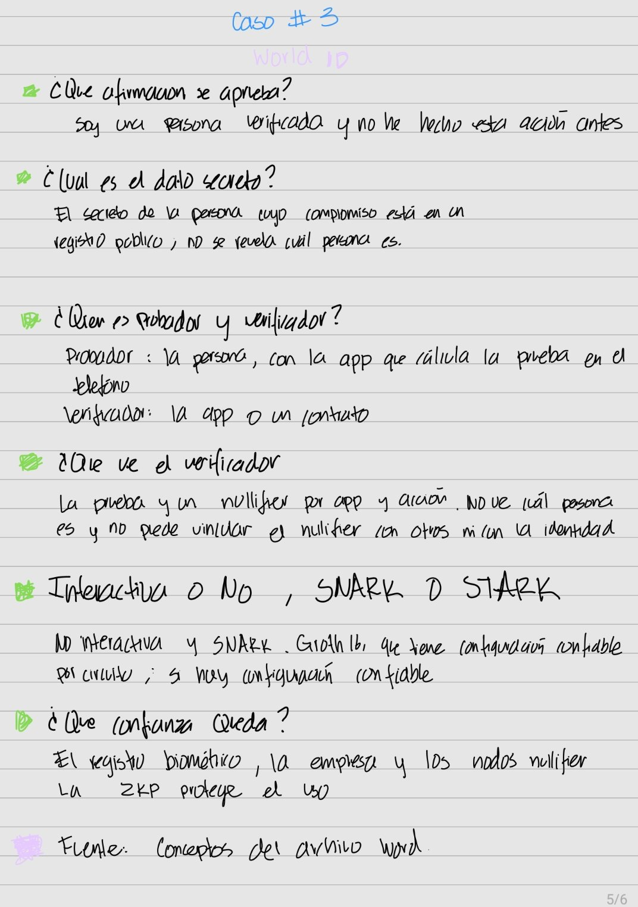
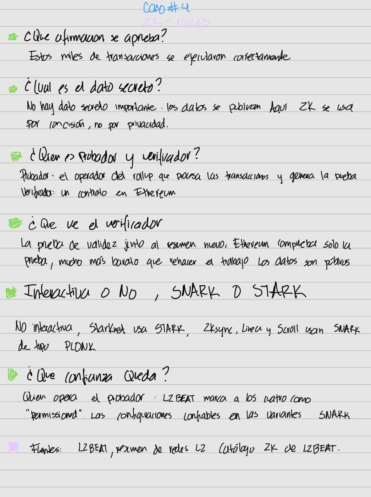

Resumen del laboratorio
El laboratorio tiene dos partes. En la Parte A se simula con una moneda la cueva de las pruebas de conocimiento cero: un probador que sabe un secreto sale siempre por donde le piden, y uno que no lo sabe solo acierta la mitad de las veces, así que repetir los retos vuelve casi imposible hacer trampa. En la Parte B se analiza un caso real de ZKP: qué prueba, qué esconde, quién verifica y qué confianza queda.
Estado: la tabla de rondas se llenó a mano con los datos de una simulación por computadora (no con moneda y papel), las fichas de los 4 casos están llenas a mano y la reflexión está redactada. Las fotos de la tabla y de las fichas están más abajo, en la sección Entrega.
Estado de actividades
Diagramas
1. La cueva (para dibujar en la hoja)
Un anillo con dos caminos A y B y una puerta al fondo que solo abre con la palabra. El probador (P) entra por A o por B; el verificador (V) espera afuera y no ve por dónde entró.

2. Una ronda, paso a paso

3. La probabilidad de hacer trampa

4. Dónde queda la confianza (esquema general)
Esquema general, no de un caso concreto. Los datos de cada caso salen de las fuentes del session doc.

La probabilidad de hacer trampa: ½ⁿ
Un tramposo que no sabe la palabra pasa cada ronda con probabilidad ½. Para pasar n rondas seguidas es ½ⁿ:
| Rondas (n) | Pasar las n rondas | En % | Caer antes o en la ronda n |
|---|---|---|---|
| 1 | 1/2 | 50 % | 50 % |
| 2 | 1/4 | 25 % | 75 % |
| 3 | 1/8 | 12.5 % | 87.5 % |
| 4 | 1/16 | 6.25 % | 93.75 % |
| 5 | 1/32 | 3.125 % | 96.875 % |
| 10 | 1/1024 | 0.098 % | 99.902 % |
El verificador no oye la palabra: se convence por la probabilidad, no por el dato. Tabla completa en REFERENCIA.md.
Tabla de rondas (simulada por computadora)
Dicho tal cual es: esta tabla es una simulación por computadora con números aleatorios (simulacion/cueva.py), no la cueva con moneda y papel en clase.
Sirve para ver cómo sale la actividad y comprobar que ½ⁿ funciona.

| Probador | ¿SÍ o NO sabe? | R1 | R2 | R3 | R4 | R5 | R6 | R7 | R8 | R9 | R10 | Cayó en la ronda | Rondas pasadas | ½ⁿ |
|---|---|---|---|---|---|---|---|---|---|---|---|---|---|---|
| A | SÍ | ✓ | ✓ | ✓ | ✓ | ✓ | ✓ | ✓ | ✓ | ✓ | ✓ | — | 10 | 1/1024 |
| B | NO | ✓ | ✗ | 2 | 1 | 1/2 | ||||||||
| C | NO | ✗ | 1 | 0 | 1 | |||||||||
| D | SÍ | ✓ | ✓ | ✓ | ✓ | ✓ | ✓ | ✓ | ✓ | ✓ | ✓ | — | 10 | 1/1024 |
| E | NO | ✓ | ✓ | ✓ | ✗ | 4 | 3 | 1/8 | ||||||
| F | NO | ✗ | 1 | 0 | 1 | |||||||||
| G | NO | ✓ | ✗ | 2 | 1 | 1/2 | ||||||||
| H | NO | ✗ | 1 | 0 | 1 |
Lectura: los probadores que sí saben la palabra (A y D) pasaron las 10 rondas. Los que no la saben cayeron antes: dos en la ronda 2 (G y B), uno en la 4 (E) y tres en la 1 (C, F, H). Para un tramposo, la probabilidad de pasar n rondas es ½ⁿ.
¿El verificador aprendió la palabra? No: solo vio que el probador salía por donde le pedía la moneda, nunca la oyó.
¿Una foto de las anotaciones convencería a otro trío? No: otro trío no vio que la moneda se lanzara después de que el probador escribiera, así que las anotaciones podrían estar armadas de antemano.
Comprobación con 100,000 tramposos simulados
| Ronda | % simulado | % teórico |
|---|---|---|
| 1 | 50.08 % | 50.00 % |
| 2 | 24.95 % | 25.00 % |
| 3 | 12.51 % | 12.50 % |
| 4 | 6.22 % | 6.25 % |
| 5 | 3.09 % | 3.12 % |
| Pasaron las 10 | 0.104 % | 0.098 % |
Cayeron en las primeras 4 rondas: 93.77 % (teórico: 93.75 %). Resultados completos en simulacion/resultados.md.
Reflexión (3 líneas)
(a) En la cueva, ¿qué convenció al verificador si nunca oyó la palabra?
La repetición: un tramposo solo acierta la mitad de las veces, así que pasar 10 rondas seguidas por suerte tiene probabilidad 1/1024. El verificador se convence por la probabilidad, no por el dato.
(b) En mi caso, ¿en qué punto la ZKP prueba algo falso si alguien miente o se equivoca? (un párrafo por cada uno de los 4 casos)
- UE (verificación de edad): si el emisor firmó una fecha de nacimiento falsa, la prueba "mayor de 18" sale perfecta y falsa; o si al circuito le falta una revisión (como el error de Longfellow en 2025), un tramposo mete un dato falso y la prueba igual pasa.
- Zcash: si el circuito o el sistema de pruebas tienen un fallo (como el de BCTV14 en 2019), se podrían aceptar pruebas falsas y crear monedas de la nada sin que se note; y lo mismo si todos los de la ceremonia guardaran su secreto.
- World ID: la prueba solo garantiza que estoy en el registro; si el registro biométrico acepta a quien no debería o duplica a una persona, la prueba de "persona única" sería sobre algo falso.
- zk-rollups: si el circuito está mal escrito o, en las variantes SNARK, alguien guardó el secreto de la configuración confiable, se podrían probar transacciones falsas.
(c) ¿Qué regla de mi venture comprobaría así en vez de guardar el dato?
Una regla como "mayor de 18" o "reside en Guatemala", que hoy se comprueba guardando la fecha de nacimiento o la foto del DPI, y que se podría comprobar con una prueba basada en un dato firmado por un emisor, sin guardar el dato. Si esa regla es un deber legal de KYC, lo dejo como pregunta para asesoría legal.
Entrega: fotos hechas a mano
Tabla de rondas (Parte A)

Tabla llenada a mano con los datos de la simulación por computadora (ver arriba), no con una cueva de moneda y papel en clase. Probadores con letras, sin nombres.
Ficha del caso 1: verificación de edad de la UE

Reflexión (b) de este caso: Si el emisor firmó una fecha de nacimiento falsa, la prueba "mayor de 18" sale perfecta y falsa; o si al circuito le falta una revisión (como el error de Longfellow en 2025, corregido en la v0.8.4), un tramposo mete un dato falso y la prueba igual pasa.
Ficha del caso 2: Zcash (pagos blindados)

Reflexión (b) de este caso: Si el circuito o el sistema de pruebas tienen un fallo (como el de BCTV14 en 2019), se podrían aceptar pruebas falsas y crear monedas de la nada sin que se note; y lo mismo si todos los de la ceremonia guardaran su secreto.
Ficha del caso 3: World ID

Reflexión (b) de este caso: La prueba solo garantiza que estoy en el registro; si el registro biométrico (el Orb) acepta a quien no debería o duplica a una persona, la prueba de "persona única" sería sobre algo falso.
Ficha del caso 4: zk-rollups

Reflexión (b) de este caso: Si el circuito está mal escrito o, en las variantes SNARK, alguien guardó el secreto de la configuración confiable, se podrían probar transacciones falsas.
Qué se entrega
- Foto de la tabla de rondas (Parte A) y de la ficha de caso (Parte B), llenas a mano y sin nada más en la foto.
- La ficha de 7 filas: qué se prueba, dato secreto, probador y verificador, qué ve el verificador, tipo de prueba (interactiva o no, SNARK o STARK, configuración confiable), qué confianza queda y una fuente.
- Una reflexión de 3 líneas.
Plantilla: PLANTILLA.md · Guía: README.md.
Reglas del lab
- Sin computadoras, código, apps ni instalaciones: todo es papel.
- Cero datos personales reales.
- No se inventan datos del caso: lo que no esté en las fuentes se escribe "no verificado".
- No se citan leyes extranjeras como si fueran guatemaltecas.